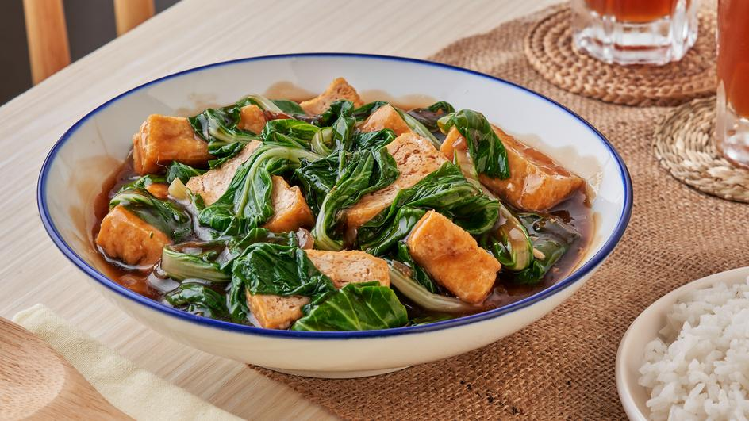

Pechay with Tokwa

Description
This is the easiest stir fry vegetable recipe to make. You first deep
fry the tofu or tokwa, as we call it in the Philippines.
Ingredients
- 0.5 cup Vegetable oil
- 0.25kg Tofu
- 4 cloves Garlic
- 1 pc Onion
- 1 tsp Ginger
- 0.5 cup Water
- Seasoning
- 0.25 Pechay
- 30g Oyster Sauce